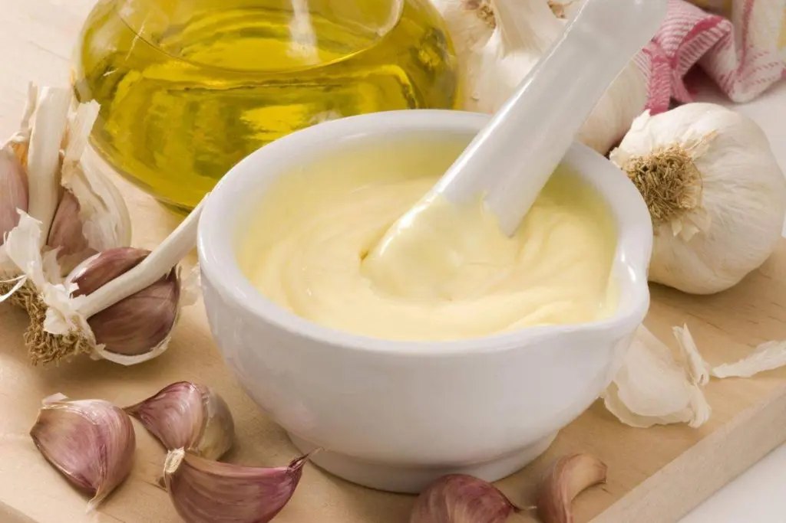
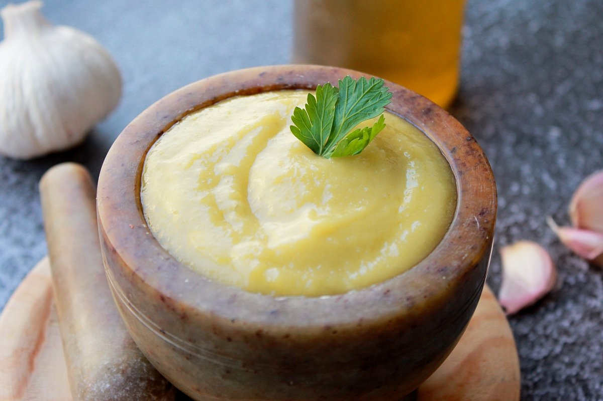
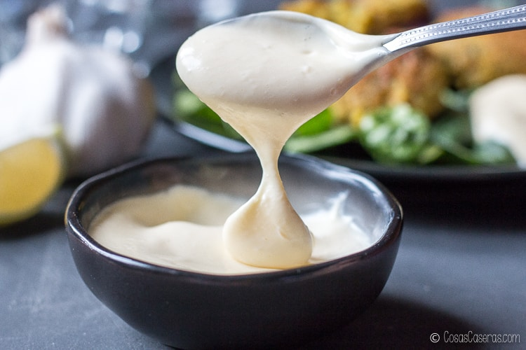

Alioli



Ingredientes (receta tradicional con mortero):
- 2 dientes de ajo
- 1 pizca de sal
- 150 ml de aceite de oliva virgen extra
- 1 cucharadita de jugo de limón o vinagre (opcional)
Ingredientes (aliolio con huevo y batidora):
- 1 diente de ajo
- 1 huevo
- 200 ml de aceite de girasol (o mezcla con oliva para suavizar el sabor)
- 1 cucharadita de jugo de limón o vinagre
- Sal al gusto
Preparación (método tradicional en mortero):
-
Machacar los ajos:
- Pela los ajos y ponlos en un mortero con la sal.
- Machácalos hasta obtener una pasta suave.
-
Emulsionar con el aceite:
- Añade el aceite de oliva poco a poco en un hilo fino mientras sigues machacando con movimientos circulares.
- Sigue batiendo hasta obtener una textura espesa y cremosa.
-
Añadir el limón (opcional):
- Si deseas un toque más suave, agrega unas gotas de limón o vinagre y mezcla bien.
Preparación con batidora:
- En un vaso de batidora, coloca el huevo, el ajo, el aceite, la sal y el limón.
- Introduce la batidora hasta el fondo y enciéndela sin moverla durante unos segundos.
- Cuando empiece a emulsionar, sube lentamente la batidora hasta integrar todo.
- Prueba y ajusta la sal o el limón si es necesario.
Consejo:
- Alioli auténtico = sin huevo, solo ajo y aceite.
- Alioli rápido = con huevo para una textura más estable.
- Puedes guardarlo en la nevera hasta 3 días en un frasco hermético.